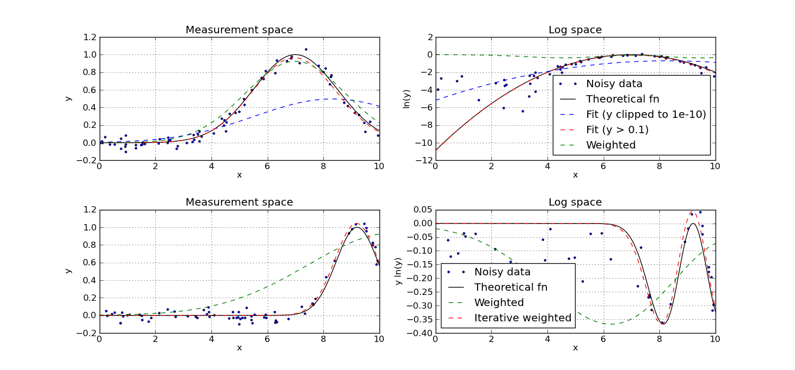

Fitting a Gaussian to noisy data-points¶
Author: stefan
Submitted on: 2011-09-22 19:43:41-07:00
This script reproduces the plots from
H. Guo, A Simple Algorithm for Fitting a Gaussian Function, IEEE Signal Processing Magazine, September 2011, pp. 134--137.
The paper describes how to fit a Gaussian function to a set of noisy data-points. I.e., given points (x, y), find the parameters \(A\) (amplitude), \(\mu\) (mean) and \(\sigma\) (standard deviation) such that
\[y \sim A e^{-(x - \mu)^2 / 2 \sigma^2}.\]
The paper illustrates four methods:
- Least squares fit of a parabola on log(y).
- Same as 1 but using only values of y where y > T.
- Weighted least squares fit, with y-values as weights.
- Iterative weighted least squares fit: iteration of method 3, but estimating y's from the fitted model after each round.
This script generates two examples: an easy one, on which methods 1 to 3 are successful, followed by a harder one on which only method 4 works.
# Implementation of the methods described in
#
# Hongwei Guo, "A Simple Algorithm for Fitting a Gaussian Function"
# IEEE Signal Processing Magazine, September 2011, pp. 134--137
#
# Author: Stefan van der Walt, 2011
from __future__ import division
import numpy as np
import scipy as sp
import scipy.linalg as sl
import warnings
warnings.simplefilter("error")
def gauss(x, A=1, mu=1, sigma=1):
"""
Evaluate Gaussian.
Parameters
----------
A : float
Amplitude.
mu : float
Mean.
std : float
Standard deviation.
"""
return np.real(A * np.exp(-(x - mu)**2 / (2 * sigma**2)))
def fit_direct(x, y, F=0, weighted=True, _weights=None):
"""Fit a Gaussian to the given data.
Returns a fit so that y ~ gauss(x, A, mu, sigma)
Parameters
----------
x : ndarray
Sampling positions.
y : ndarray
Sampled values.
F : float
Ignore values of y <= F.
weighted : bool
Whether to use weighted least squares. If True, weigh
the error function by y, ensuring that small values
has less influence on the outcome.
Additional Parameters
---------------------
_weights : ndarray
Weights used in weighted least squares. For internal use
by fit_iterative.
Returns
-------
A : float
Amplitude.
mu : float
Mean.
std : float
Standard deviation.
"""
mask = (y > F)
x = x[mask]
y = y[mask]
if _weights is None:
_weights = y
else:
_weights = _weights[mask]
# We do not want to risk working with negative values
np.clip(y, 1e-10, np.inf, y)
e = np.ones(len(x))
if weighted:
e = e * (_weights**2)
v = (np.sum(np.vander(x, 5) * e[:, None], axis=0))[::-1]
A = v[sl.hankel([0, 1, 2], [2, 3, 4])]
ly = e * np.log(y)
ls = np.sum(ly)
x_ls = np.sum(ly * x)
xx_ls = np.sum(ly * x**2)
B = np.array([ls, x_ls, xx_ls])
(a, b, c), res, rank, s = np.linalg.lstsq(A, B)
A = np.exp(a - (b**2 / (4 * c)))
mu = -b / (2 * c)
sigma = sp.sqrt(-1 / (2 * c))
return A, mu, sigma
def fit_iterative(x, y, F=0, weighted=True, N=10):
"""Fit a Gaussian to the given data.
Returns a fit so that y ~ gauss(x, A, mu, sigma)
This function iteratively fits using fit_direct.
Parameters
----------
x : ndarray
Sampling positions.
y : ndarray
Sampled values.
F : float
Ignore values of y <= F.
weighted : bool
Whether to use weighted least squares. If True, weigh
the error function by y, ensuring that small values
has less influence on the outcome.
N : int
Number of iterations.
Returns
-------
A : float
Amplitude.
mu : float
Mean.
std : float
Standard deviation.
"""
y_ = y
for i in range(N):
p = fit_direct(x, y, weighted=True, _weights=y_)
A, mu, sigma = p
y_ = gauss(x, A, mu, sigma)
return np.real(A), np.real(mu), np.real(sigma)
def log_gauss_param(A, mu, sigma):
"""Give A, mu, sigma, that represent the Gaussian
gauss(x, A, mu, sigma),
compute the a, b, c that parameterise the parabola
log(gauss(x, A, mu, sigma)) ~ a + bx**2 + cx.
"""
ss = 2 * sigma**2
return np.log(A) - mu**2 / ss, \
2 * mu / ss, \
-1 / ss
if __name__ == "__main__":
import matplotlib.pyplot as plt
np.set_printoptions(precision=2)
def setup_experiment(A, mu, sigma, N=70, noise_std=0.05,
weighted=False, axes=None):
print "\nExperiment (A=%.2f, mu=%.2f, sigma=%.2f)\n" % (A, mu, sigma)
if axes is None:
f, axes = plt.subplots(1, 2)
x = np.random.random(N) * 10
y = gauss(x, A=A, mu=mu, sigma=sigma) + \
np.random.normal(size=len(x), scale=noise_std)
ax = axes[0]
ax.plot(x, y, '.', label='Noisy data')
ax.set_xlabel('x')
ax.set_ylabel('y')
ax.set_title('Measurement space')
ax.grid()
ax = axes[1]
positive = (y > 1e-10)
ax.set_xlabel('x')
ax.set_title('Log space')
ax.grid()
if weighted:
ax.plot(x[positive], y[positive] * np.log(y[positive]),
'.', label='Noisy data')
ax.set_ylabel('y ln(y)')
else:
ax.plot(x[positive], np.log(y[positive]), '.', label='Noisy data')
ax.set_ylabel('ln(y)')
return x, y, A, mu, sigma
def experiment(x, y, A, mu, sigma, fit_func=fit_direct, fit_args={},
label='Default', axes=None, style='k-'):
weighted = fit_args.get('weighted', False)
p = fit_func(x, y, **fit_args)
A_, mu_, sigma_ = np.abs(p)
x_ = np.linspace(0, 10, 200)
y_ = gauss(x_, A=A_, mu=mu_, sigma=sigma_)
print "Parameters [%s]: %.2f, %.2f, %.2f" % (label, A_, mu_, sigma_)
if axes is None:
f, axes = plt.subplots(1, 2)
ax = axes[0]
ax.plot(x_, y_, style, label=label)
def parabola(x, a, b, c):
return np.real(a + b * x + c * x**2)
a, b, c = log_gauss_param(A, mu, sigma)
a_, b_, c_ = log_gauss_param(A_, mu_, sigma_)
ax = axes[1]
if not weighted:
ax.plot(x_, parabola(x_, a_, b_, c_), style, label=label)
else:
ax.plot(x_, y_ * parabola(x_, a_, b_, c_), style, label=label)
ax.legend(loc='lower right')
# ---------------------------------------------------
f, axes = plt.subplots(2, 2, figsize=(15, 7))
plt.subplots_adjust(hspace=0.4)
data = setup_experiment(A=1, mu=7, sigma=1.5, N=70, noise_std=0.05,
axes=axes[0])
experiment(*data, axes=axes[0],
label='Theoretical fn', style='k-',
fit_func=lambda *args, **kwargs: data[2:])
experiment(*data, axes=axes[0],
fit_args={'weighted': False},
label='Fit (y clipped to 1e-10)',
style='b--')
experiment(*data, axes=axes[0],
fit_args={'weighted': False, 'F': 0.1},
label='Fit (y > 0.1)',
style='r--')
experiment(*data, axes=axes[0],
fit_args={'weighted': True},
label='Weighted',
style='g--')
# ---------------------------------------------------
data = setup_experiment(A=1, mu=9.2, sigma=.75, N=70, noise_std=0.05,
weighted=True, axes=axes[1])
experiment(*data, axes=axes[1],
label='Theoretical fn', style='k-',
fit_func=lambda *args, **kwargs: data[2:],
fit_args={'weighted': True})
experiment(*data, axes=axes[1],
fit_args={'weighted': True},
label='Weighted',
style='g--')
experiment(*data, axes=axes[1],
fit_func=fit_iterative,
fit_args={'weighted': True},
label='Iterative weighted',
style='r--')
axes[1, 1].legend(loc='lower left')
plt.show()